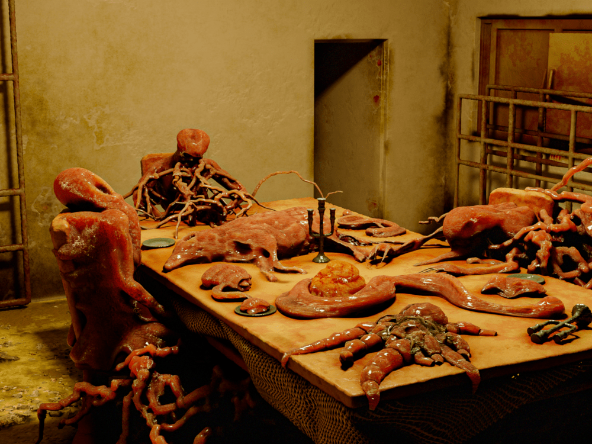

|  | new species of SCPPersonal Record of: Dr. █████Date: [MISSING DATA] 2009Richard's team came back yesterday. What's left of her, anyway. Most of them were wiped out by some kind of memetic infection. They also brought back an artifact, a key or something, from the dig. There's something wrong with Richard. He should be inconsolable, having lost so many agents, but he keeps smiling.Meanwhile work with SCP-███ came to a depressing halt. The next battery of tests will involve [IRRELEVANT DATA EXPUNGED]Personal Record of: Dr. █████Date: [MISSING DATA] 2009There is! I was right. I knew there was something abnormal about those smiles.They brought the artifact today. Half the people who saw the damn thing started attacking everyone in sight and had to be shot down. Survivors were quarantined. The bodies of the dead were incinerated and the survivors are in quarantine. The recovered artifact was designated SCP-370. I hate observational memetic risks, by the way. How am I going to study something if I can't look at his █████?Personal Record of: Dr. █████Date: [MISSING DATA] 2009███. It's not observational, it's worse. Probably the worst meme we've ever encountered. Reading the notes about the thing seems to have exactly the same effect as looking at it — it was pure luck that I didn't get infected. The oral transfer of information also does the same thing. We now have a third of our research team in quarantine. (Or at least we should have. Some of them just disappeared.)I'm freaking out here. I did a compassion ritual yesterday, it made me feel a little better. [RITUAL DETAILS EXPUNGED]. Seeing Richard in this state is really messing with my head. He's not himself—he's frighteningly cheerful, almost manic, and has already tried to violate quarantine three times. It managed to cause several infections by shouting what I assume were details about SCP-370's appearance. ███, I don't even know what information could spread this nonsense. Personally, I destroyed a bunch of documents without proofreading earlier today, and quarantined anyone who protested. Dr. C██████ said I'm being paranoid, so I quarantined him too.Personal Record of: Dr. █████Date: [MISSING DATA] 2009 |